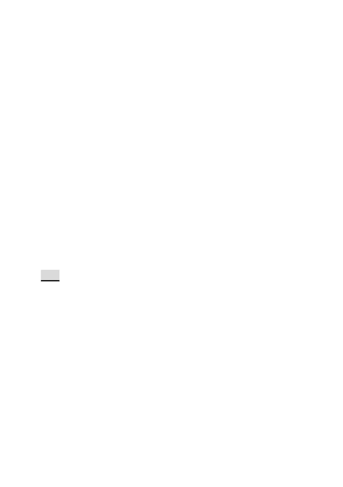

悉依臺北市土地使用分區管制自治條例第三種住宅區及第三
之二種住宅區規定辦理。
2. 使用管制：
本計畫區之使用比照本市土地使用分區管制自治條例第三種
住宅區及第三之二種住宅區之使用組別。
3. 本計畫區得適用101 年11 月27 日公告之「修訂臺北市老舊中
低層建築辦理都市更新擴大協助專案計畫」容積獎勵。本計畫
區總容積上限不得超過各該建築基地2倍法定容積。
4. 本計畫區獎勵容積核給額度，依本市都市設計及土地開發許可
審議委員會及都市更新及爭議處理審議會審議結果辦理。
五、 本案係市府103年9月4日府都規字第10335737903號函送到會，並
於103年9月5日起公開展覽30天。
六、 公民或團體所提意見：1 件。(詳公民或團體意見綜理表)
七、 申請單位：臺北市都市更新處。
八、 辦理單位：臺北市政府。
九、 法令依據：都市計畫法第 27條第l項第4款。
決議：
一、 本案除下列修正內容，其餘依公展計畫書、圖內容，修正後通
過。
（一） 計畫書第 8、9 頁圖說所述「人車『分離』自行車道…」之文
字，修正為「人車『分道』自行車道…」。
（二） 計畫書第 14 頁圖 8 整體規劃構想示意圖，應以本變更案為主
作規劃敘明。對於北安路南側屬大彎北段範疇之規劃構想與文
字，予以刪除。
（三） 計畫書第 17 頁玖、都市設計準則 一、開放空間（一）：「本計
畫區東、西側鄰北安路 811 巷及 821 巷側設置 4 公尺無遮簷
人行道，南、北側鄰北安路及現有巷道側則留設 3 公尺無遮簷
人行道」，修正為「本計畫區東、西側鄰北安路 811 巷及 821
- 16 -